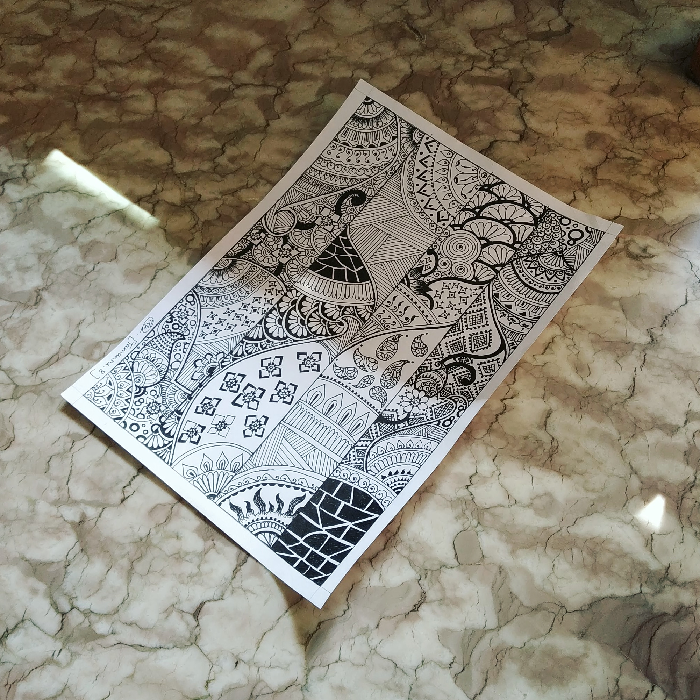

ART IN WHITE
In frame is a mandala art which is following a different pattern of design.
mandala art or design can be done in any shape , here its
done in a rectangle and many different line patterns and some different design patterns are used
such as brick design, sun design, zentangle art etc.
Materials Required :
A-4 size paper.
Any black gel pen
Scale and Pencil.
steps one can follow(if needed) :
First take a plain paper and draw the borders.
Then divide the paper into 4 parts by drawing straight lines keeping equal amount space between every line.
After all this is done you can start drawing different patterns or designs and fill up all the boxes ,after which the design will be complete.